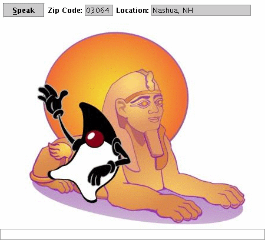

Sphinx-4 ZipCity Demo
|
This is a JavaTM WebStart application that will demonstrate digit
recognition. ZipCity will listen for spoken zip codes and will display
the associated city and state.

Once ZipCity is running, click on the Speak button and then speak your zip code (a five-digit number). The recognized digits as well as the associated city and state will be displayed
You only need to build ZipCity if you are running it as a
stand-alone application. You do not need to build ZipCity to run it as
a WebStart application.
If you intend to run ZipCity as a stand-alone application, check the
bin directory to determine if it already has the ZipCity.jar file.
If not, you need to build the demo to create that JAR. To build this
demo, merely type the following:
ant -find demo.xml
Doing so will create bin/ZipCity.jar under the top
level directory. You can run the demo using java -jar
(see "Running" below).
Running
To run ZipCity as a WebStart application, click here: ZipCity
WebStart
You can also run ZipCity as a stand-alone application. To do so first
make sure that you have JSAPI setup correctly.
JSAPI setup correctly.
Then, to run the demo, type:
sphinx4> java -jar bin/ZipCity.jar
NOTE:
lib/sphinx4.jar is built. If not, go to the top level
directory and type: antAcknowledgments